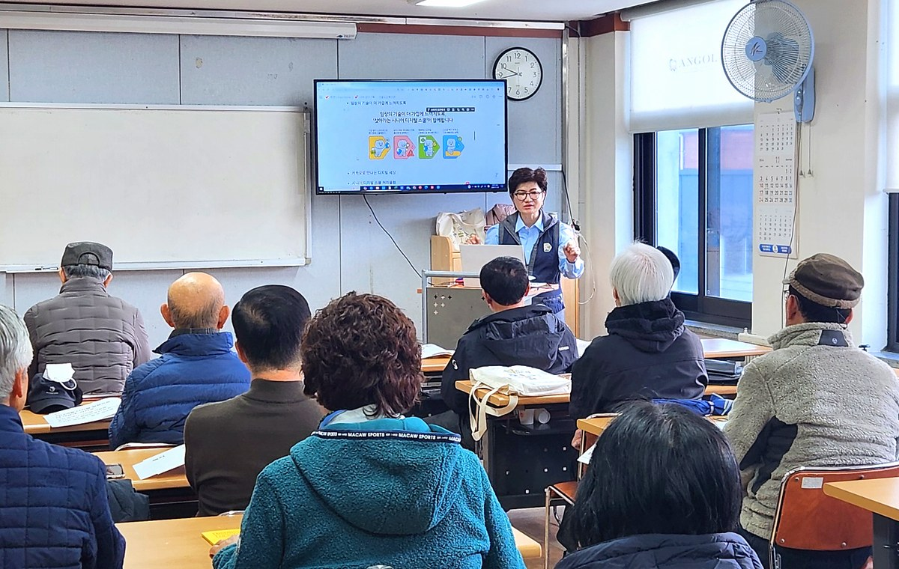
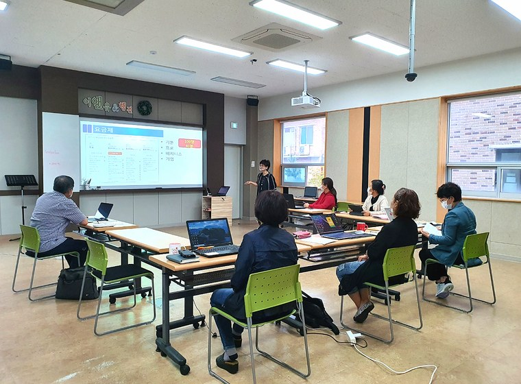
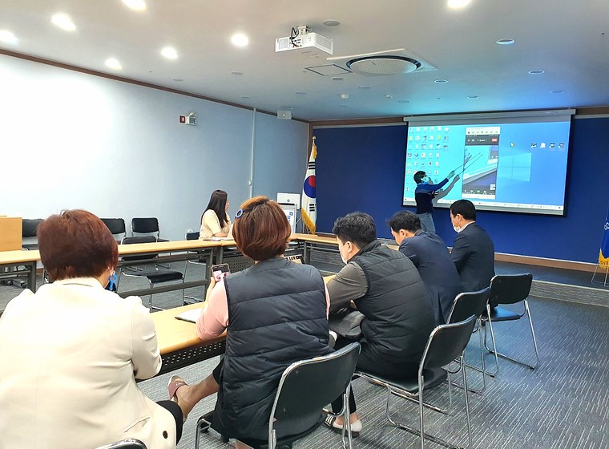
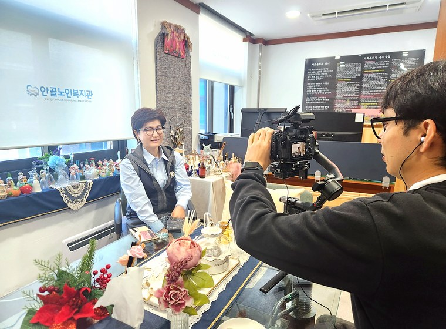
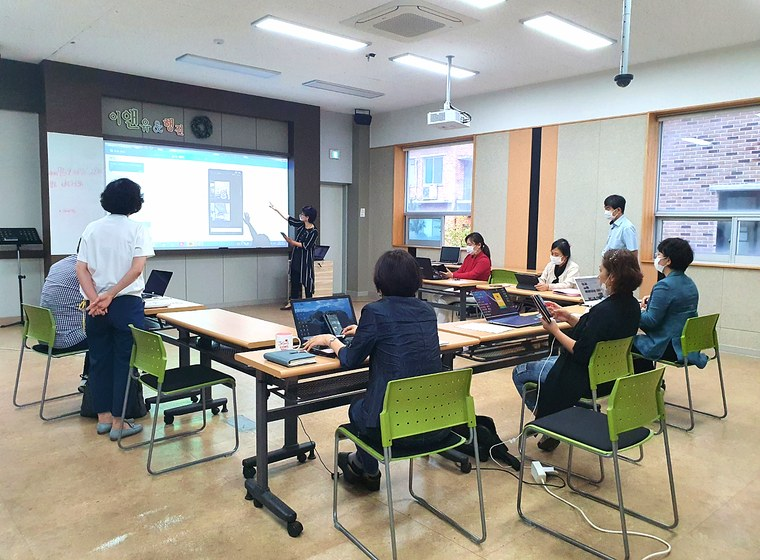

01
AI BEGINNER
AI 기초·생성형 AI 입문
ChatGPT와 생성형 AI의 핵심 개념을 이해하고, 일상과 업무에 바로 쓰는 프롬프트를 실습합니다.
- AI가 처음인 분
- 기초 개념 + 실습
- 쉽고 명확한 설명
↗
ABOUT KATE HONG
AI 융합 지도사 Kate Hong은 낯선 기술을 쉽게 풀어내고, 참여자가 자신의 일과 사업에 바로 적용할 수 있도록 돕는 실무형 강의를 지향합니다.
LECTURE PROGRAM
대상과 목적에 맞게 난이도, 실습 도구, 결과물을 조정합니다.
ChatGPT와 생성형 AI의 핵심 개념을 이해하고, 일상과 업무에 바로 쓰는 프롬프트를 실습합니다.
브랜드 메시지, 카드뉴스, 블로그 글감, 숏폼 아이디어 등 창업 홍보에 필요한 콘텐츠를 AI와 함께 만듭니다.
문서 작성, 요약, 자료 정리, 발표 준비 등 반복 업무를 줄이는 AI 활용 루틴을 익힙니다.
교육 대상의 디지털 수준과 기관의 목표에 맞춰 강의, 워크숍, 발표회형 수업으로 설계합니다.
HOW WE WORK
설명은 짧고 명확하게, 실습은 구체적으로, 결과물은 참여자의 실제 상황에 맞춥니다.
참여자의 디지털 경험과 교육 목적을 확인해 난이도를 맞춥니다.
AI 도구를 직접 사용하며 글, 이미지, 발표 자료 등 결과물을 만듭니다.
수업 후에도 혼자 활용할 수 있도록 프롬프트와 작업 흐름을 정리합니다.

수강생이 실제로 따라 해보는 방식으로 진행해, 수업이 끝난 뒤에도 스스로 활용할 수 있게 돕습니다.
“AI는 정답을 외우는 기술이 아니라, 내 일을 더 쉽게 만드는 실용 도구입니다.”
Kate Hong의 교육 철학PORTFOLIO
강의, 실습, 촬영 콘텐츠 제작까지 실제 현장 이미지를 배치해 신뢰감과 전문성을 강화했습니다.




EDUCATION VALUE
AI를 “아는 것”에서 멈추지 않고, 홍보·업무·학습에 반복해서 활용할 수 있는 방법을 남깁니다.
낯선 도구를 쉽게 이해하고 바로 써볼 수 있도록 단계별로 안내합니다.
콘텐츠 기획, 문서 작성, 발표 준비처럼 실제 결과물을 만드는 데 집중합니다.
기관, 창업자, 시니어 등 참여 대상에 맞춰 예시와 실습 난이도를 조정합니다.
LET'S WORK TOGETHER
교육 대상, 인원, 원하는 주제와 일정만 알려주시면 목적에 맞는 수업 구성을 제안해 드립니다.